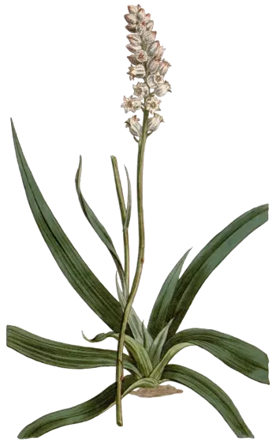

Plant Grimoire
Ague Root
Notes/Warnings
Drug Interactions are possible with oxytocins (pitocins)
Origin
North AmericaEastern United States
Scientific Name
Aletris farinosa
USDA Hardiness Zone
4a4b5a5b6a6b7a7b8a8b9a9b
Type
HerbLeafSeedCrop
Gender
Feminine
Also called
Ague Grass, Bitter Grass, Black-root, Crow Corn, Stargrass, Starwort, True Unicorn Root, Unicorn Root, Aletris, Blazing Star, Unicorn Horn, Colic Root
Astrology1
Correspondences6
Source Entry Notes
Source astrology added: Saturn.
Source deities added: Isis, Hecate, Nephthys, Demeter.
Source folk name added: Colic Root.
Source correspondences added: Earth, Protection.
Source power: Protection.
⚠️ POISONOUS — root is poisonous.
Source — Specific Uses
See Unicorn Root, False for specific uses. Both roots share the same magickal applications.
Magickal Properties
Powers: Protection
Magickal Uses
Sprinkle around your home to keep evil at bay, or carry in a sachet for the same purpose. Also, use in hex-breaking and uncrossing rituals and mixtures.
Safety Notes
⚠️ DI* - May antagonize some oxytocins (pitocin). Use with caution.
USDA Hardiness Zone for Aletris farinosa sourced from Missouri Botanical Garden Plant Finder.